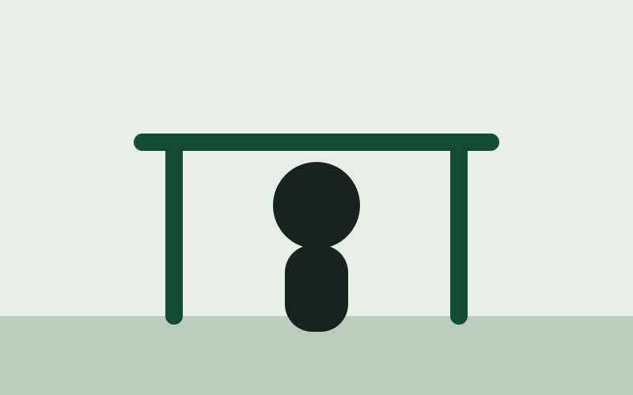

Viikon harjoitusohjelma
Esimerkkiohjelma yhdistää lihaskuntoharjoittelun ja palautumisen. Valitse itsellesi sopivat painot ja lämmittele ennen harjoitusta.

- Maanantai – ylävartalo
- Penkkipunnerrus
- Ylätalja
- Pystypunnerrus käsipainoilla
- Keskiviikko – alavartalo
- Jalkakyykky
- Romanialainen maastaveto
- Askelkyykky
- Perjantai – koko keho
- Maastaveto
- Punnerrus
- Vatsarutistus
- Tiistai, torstai ja viikonloppu – lepoa tai kevyttä liikuntaa